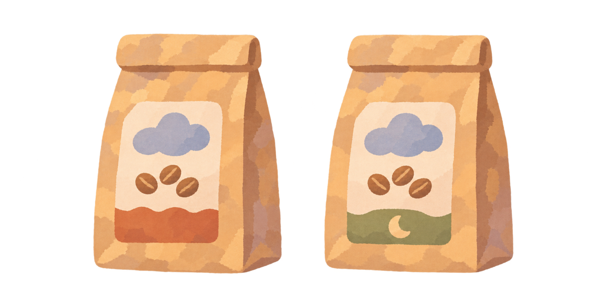
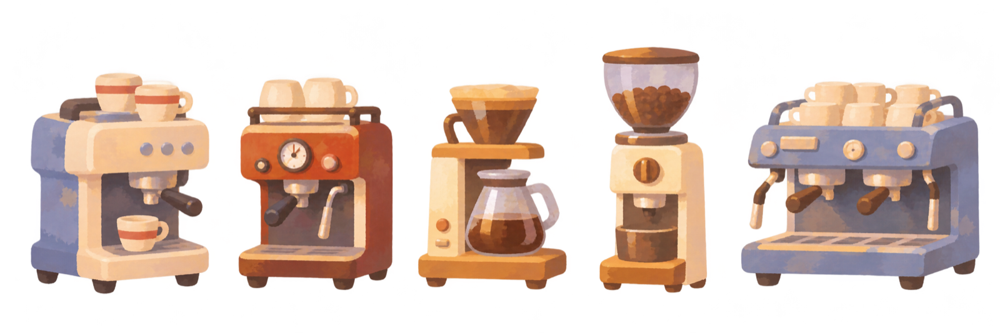
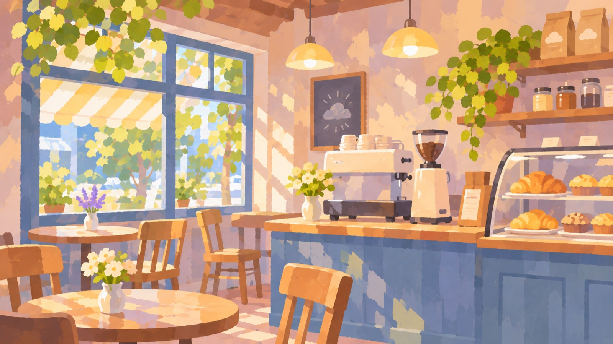

브랜드 전환 상담 고객 특별 혜택
우리 매장의 가능성,
부담 없이 확인하세요.
장비·시설 1차 검토 무료
상담 후 구름커피 원두 샘플 키트 제공


우리 매장 기준으로.

구름커피 가맹 · 브랜드 전환
기존 장비와 시설부터 오픈 후 운영까지.
우리 매장에 맞는 전환을 함께 준비합니다.
브랜드 전환 상담 고객 특별 혜택
장비·시설 1차 검토 무료
상담 후 구름커피 원두 샘플 키트 제공


구름커피는 가상 브랜드이며, 위 혜택은 웨비나 시연을 위해 기획한 데모 프로모션입니다.
가상 브랜드 구름커피의 웨비나용 데모 프로모션입니다.
기존 카페의 새로운 시작
전부 바꾸는 것보다, 우리 매장에 맞는 방향을 찾는 일.
커피와 공간
구름커피가 그리는 매장의 모습을 만나보세요.
커피와 매장 이미지는 구름커피의 브랜드 콘셉트를 표현한 일러스트입니다.
우리 매장 맞춤 준비
막연했던 전환 준비를 구체적인 상담으로 연결합니다.
장비·시설 활용 검토
바꾸기 전에, 활용할 수 있는 부분부터 살펴봅니다.
모델명이나 사진을 준비하면 상담이 더 구체적이 됩니다.
최종 활용 여부와 교체 범위는 실제 장비 상태와 현장 조건을 확인한 뒤 안내합니다.
원두·메뉴 교육
원두의 특징을 이해하고 메뉴 제조의 기본을 익힙니다.
매장에서 함께 일할 인력과 교육 일정을 상담하세요.
교육 2인 지원은 가상 브랜드의 데모 프로모션입니다. 구체적인 교육 범위와 일정은 상담에서 안내합니다.
오픈 전후 운영 지원
적은 인력으로 준비하고 있다면 알려주세요.
현재 운영 상황을 바탕으로 필요한 지원을 정리합니다.
세부 지원 범위와 일정은 매장별 조건을 확인한 후 안내합니다.
브랜드 전환 절차
확인할 것은 꼼꼼하게, 시작은 차근차근.
지역과 현재 매장,
궁금한 점을 알려주세요.
보유 장비·시설과
운영 상황을 살펴봅니다.
희망 개점일에 맞춰
전환 범위와 일정을 협의합니다.
협의한 계획을 바탕으로
교육과 매장 준비를 진행합니다.
전환 비용·범위·일정은 상담 및 현장 검토 결과에 따라 달라집니다.
대상: 브랜드 전환 상담을 완료한 고객 · 매장당 2인, 1회 · 교육 내용과 일정은 별도 협의 · 웨비나용 가상 프로모션
자주 묻는 질문
시설 활용부터 전환 비용, 교육과 운영 지원까지.
기존 시설과 장비부터 검토합니다. 활용 가능한 부분과 변경이 필요한 부분은 매장 상태, 브랜드 운영 기준과 현장 조건을 확인한 후 안내합니다.
제조사·모델과 기본 사양을 바탕으로 사전 검토합니다. 최종 활용 여부는 실제 장비 상태, 관리 이력, 전기·급배수 등 설치 조건을 확인한 뒤 판단합니다. 모델명이나 사진을 준비해 주세요.
매장 규모와 현재 상태, 장비·인테리어 변경 범위에 따라 달라집니다. 희망 개점일과 영업 일정에 대한 제약을 알려주세요. 상담과 현장 검토를 거쳐 필요한 범위와 일정을 협의합니다.
메뉴 제조 교육, 오픈 준비, 메뉴·마케팅·운영 지원 등 필요한 내용을 상담할 수 있습니다. 현재 인력과 운영 상황에 맞춰 검토 항목을 정리하고, 세부 지원 범위는 상담에서 안내합니다.
‘가맹 상담’에서 기존 카페 운영 여부와 전환 의향을 알려주세요. 원두 샘플 키트는 첫 상담 완료 후 매장당 1회, 교육 지원은 상담 완료 고객 대상 매장당 2인·1회로 기획했습니다. 장비·시설 1차 검토는 장비 모델명·사진 및 시설 사진·도면 기반이며 현장 점검·수리는 별도입니다. 모두 가상 브랜드의 웨비나용 데모 혜택입니다.
매장 지역과 희망 개점 시기, 보유 장비의 모델과 상태, 가장 궁금한 점을 준비해 주세요. ‘기존 시설 활용과 전환 일정 검토’를 매장 상황에 맞춰 구체적으로 상담할 수 있습니다.
구름커피 가맹 상담
지역과 희망 일정, 보유 장비를 바탕으로
사장님에게 필요한 상담을 준비합니다.